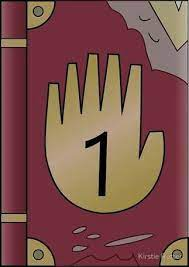
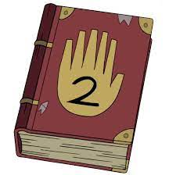
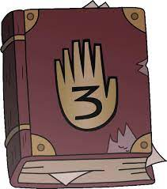

El libro apareció por primera vez en el final de "Gideon Asciende".
Fue escrito por Stanford Pines, y registra muchas de las anomalías que suceden en Gravity Falls, Oregón. Ford decidió esconder este libro y a los otros diarios para prevenir que alguien pudiera activar el Portal Universal, así que decidió dárselo a su hermano gemelo, Stanley Pines para que lo llevara lejos del pueblo, pero Stan se puso furioso porque su hermano lo decidió ver después de tantos años solo para decirle que se vaya lo más lejos posible. Esto desencadena una pelea de hermanos que por accidente envía a Stanford adentro del Portal Universal, desde entonces Stanley pasó su tiempo buscando los otros diarios para poder re-activar el portal y lograr que Stanford regresara, cosa que pasó en el episodio Él no es lo que parece.
Más tarde, el libro fue quemado por Bill Clave en el episodio Raromagedón: Parte 1, junto a los otros diarios para evitar que Dipper Pines pudiera usar su información para derrotarlo, aunque cuando el Raromagedón terminó, todas las acciones de Bill se esfumaron y los diarios reaparecieron intactos en el bosque, para luego ser encontrados más tarde por la Familia Pines, los cuales los tiraron en El Pozo sin Fondo con la esperanza de que aparecieran junto a una mente joven que estuviera a punto de emprender su nueva aventura. Pero su paradero es totalmente desconocido.
El libro 2 o el Diario 2 es parte de una serie de libros, que incluyen al 3 y al 1. Contiene información sobre secretos y criaturas supernaturales de Gravity Falls. El autor de los Diarios fue Stanford Pines, hermano de Stanley Pines. Gideon es quien lo poseía hasta el capítulo Gideon Asciende cuando él es arrestado y lo deja caer y Stanley Pines lo recoge. Bill Clave lo destruyo en el episodio Xpcveaoqfoxso
El Diario 3 es un libro que pertenece a una colección de 3 volúmenes. Dipper (Su anterior dueño) lo encontró luego de mover unos interruptores en un árbol metálico en el bosque. Fue escrito por su tío abuelo Stanford Pines, hermano gemelo de Stanley Pines, contiene información sobre los extraños misterios de Gravity Falls y sobre las criaturas mágicas que el autor encontró. Fue escrito después de 6 años de investigación en Gravity Falls.
Bill Clave los quemo junto al Diario 1 y el Diario 2, pero cuando terminó el Raromagedón y todo volvió a la normalidad, los diarios se restauraron y Stanford Pines decidió arrojarlos al El Pozo sin Fondo para que una mente joven de un lugar lejano los encuentre y emprenda su propia aventura.
